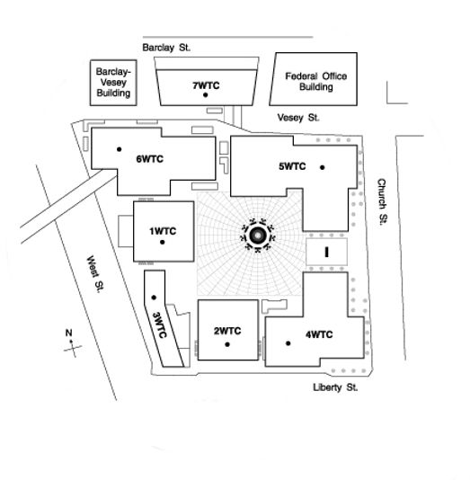

Using message borads to our advantage
September 2006
Message boards provide an excellent opportunity to "make our case" for a new investigation. By putting
our strongest evidence and arguments out there (and addressing common disinformation) we're providing
all other like-minded individuals information they can use. In the end, it really isn't about the people
we're arguing with on the board itself (although occasionally they do come around) more it's about
everyone else.
True we can't spend all our time and energy on message boards, but a post here and a post there (even if
it's just a "cut and paste" to address a common fallacy) can have a really big effect.
I spent a week addressing common arguments made against the 911 truth movement at Bill Maher's message
board; hopefully you'll find some useful info below. (My replies appear as regular text, other posters'
messages appear in "Quote" boxes.
Quote:
Originally Posted by Archibald Cuntington
So Americans are too stupid to see through the government's suggestion of a Saddam-9/11 link, but they
are smart enough to see through the official 9/11 story?
My reply: The only way to determine the validity of any belief is to examine the evidence that supports
it. In the case of Americans believing Saddam was linked to 911, the "flaw" in their ability to conclude
accurately is easily identified. It revolves around the fact they accepted an unreliable / inaccurate
source of information (the administration and its bullhorn the Mainstream Media) to form their belief.
Therefore it's a logical fallacy to suggest "because they drew an inaccurate conclusion regarding Saddam
and 911, these Americans are incapable of drawing an accurate conclusion regarding the official
account." If their beliefs are based on solid evidence (VS the baseless claims on which their Saddam /
911 beliefs were formed) there is an excellent chance their conclusions are accurate.
Quote:
Originally Posted by Circus
And those that believe the 9/11 conspiracy theories were fooled by lies, innacuracies, and rhetoric.
Such as doctored photos, edited videos, quote mining, etc. Similarily, most intelligent people can see
right through it.
In keeping with my thesis; what is the evidence you have to back your claims? Is this something you've
"heard" and accept is true? If so...what sources?
Based on your statement, I'm guessing you have a fair amount of "knowledge" regarding the official
account (as told by the government, the media, and its supporters.)
I've literally spent years researching the "other side" of the argument. Granted; there have been a lot
of ridiculous claims made by "conspiracy theorists." But there are also a lot of legitimate pieces of
information that, after 5 years, have still not been adequately addressed. If you're at all interested
in my view, this brief "1-hour guide" lays it out pretty clearly:
http://stopthelie.com/1-hour_guide_to_911.html
The essay covers more than 9/11. I'd be willing to bet (within a page or so) you'll find some
"interesting" information.
Quote:
Originally Posted by Circus
I looked through some of your link and didn't really see anything new.
I'm going to refer to the recent popular mechanics debate with loose change. The researcher at PM said:
"The fact is, there are always little details that don't always add up until you finish your research.
But when you really dig down, every single one of these has a clear explanation."
So, I'll put it on you. What are 2 or 3 of your strongest pieces of evidence of a 911 conspiracy? I'll
attempt to dig deep and see what I find.
Clearly there was a "9/11 conspiracy," it's just a matter of figuring out whether or not the government
has given us an "infallible" account of that conspiracy.
The best reason we have for doubting the accuracy of the official account is the source of that account
itself. (That is to say: The same source that linked Saddam to 911, to OBL, to the anthrax attacks, and
to WMD; the same source that has been "wrong" about innumerable other claims presented as "fact.") Call
me crazy, but I'm distrustful of any individual or institution that gives me inaccurate or misleading
information on a regular basis. (Yes, this includes those who claim to be involved in the "911 Truth
Movement.")
As far as evidence goes (that the government is lying) the body of evidence is "greater than the sum of
its parts." From a string of implausible "intelligence failures" that permitted the attacks, to the fact
nobody was ever held accountable for negligence and some were actually promoted. From the
administrations deliberate attempt to derail an investigation; to the way in which the shoe-string
"Commission" was eventually assembled and directed. From being told repeatedly "nobody could have ever
imagined this" to the fact military drills mimicking precisely a 9/11 style attack (Jets as weapons
flown into the WTC) were conducted years prior to the actual event. Moreover, multiple drills of this
type were being run on 9/11 itself. -but we're to accept it was "never imagined."
Each of these pieces paint a clear picture of deception and we need to get to the bottom of why. There
could be many reasons I suppose, but when you look at how the attacks have been used to completely
transform foreign and domestic policy; it would be foolish to ignore the worst case scenario. If you
research the history of state sponsored "false-flag terrorism," the absurdity of NOT considering all the
angles becomes even more apparent.
I've noticed many have held up Popular Mechanics as a reliable source for debunking "911 myths." I wish
it were true. If their explanations were as simple and clear cut as they'd have us believe, all I'd have
to worry about is the way in which 911 has been used to further an already established (and otherwise
impossible) military agenda.
This interview shows the vulnerability of some of their assertions.
http://tree3.com/sound/popular.mp3
Quote:
Originally Posted by Archibald Cuntington
One of these days I am going to write an essay listing the similarities between the 9/11 Truth Movement
and Creationism, but here is one logical fallacy that is commonly committed by both: the biased sample.
The Intelligent Design movement, which is a vast PR campaign dedicated to constructing the illusion that
creationism is a legitimate scientific theory, often cite a list of scientists who have signed a
petition against Darwin's theory of evolution. Aside from the fact that very few of these scientists are
actually biologists, the ID press releases also neglect to mention that the people who have signed this
statement represent far less than one percent of the scientific community. In fact, you will seldom hear
them even address the existence of the latter; in order to make their unscientific views seem
legitimate, they must reinforce the illusion that the scientists who agree with them are the only
scientists who exist.
The 9/11 Truth Movement employs the same tactic. They will trumpet the account of one dissenting
professor as proof that the widely accepted reasons for the WTC collapses defy the laws of physics, but
they conveniently neglect to mention that to the vast majority of physicists, architects, structural
engineers, etc., the towers fell down exactly as they should have without the need for explosives,
missiles, or a Jewish earthquake machine. The cherrypicked expert is a vital tool for making it seem
like the conspiracy theorists have science on their side despite the fact that almost none of them have
any training in any of the relevant fields.
Both groups lie on the fringe of scientific thought, and as such, both must resort to fallacies such as
the biased sample in order to make their pseudoscience look like science.
I've already spent too much time here today; a few quick points:
1. I feel it's disingenuous to imply the government doesn't engage in "cherry-picked" information or
"biased samples." To the contrary, those employed by the government have a vested interest (a bias) for
staying within the parameters set by their superiors. On the other side, many who've come forward
against the official account had no vested interest (save perhaps a bias for the truth.) Many would
argue their bias has COST them rather than provide security and advancement.
2. Given your analysis, all of Galileo's observations must have been irrelevant. After all, what
"percentage of the scientific community" would have openly backed his assertion that the earth was not
the center of the universe and our planet (god forbid) actually revolved around the sun? AGAIN; The only
way to determine the validity of a belief is to examine the evidence that supports it. The fact many
people believe something does not necessarily indicate accuracy (or lack of accuracy.) Only the evidence
can do that.
3. Nobody is implying the Scholars for 911 Truth are the "only scientists who exist." Honestly, I don't
understand the premise of your argument. Does the government point to the Scholars website to support
its assertions? Why would the 9/11 Truth Movement use "Official Theory" scientists as a reference for
making their point? (-Except maybe to show holes in the official account.)
And although I've already covered the "vast majority" argument in point 2; what do you consider the
"vast majority?" Where is this enormous sea of experts? And why, out of all those people, have none
stepped forward to debate their facts in a public forum?
Steven Jones' paper regarding the collapse of the Towers and WTC7 has been peer-reviewed multiple times.
So, let's have another scientist (with an alternate peer-reviewed theory) debate him. Show us where he's
wrong. If there was no molten metal, explain the confusion and the debris that suggests otherwise. If
there was no thermite; show us where Jones messed up. Explain how "compressed air" bypassed the path of
least resistance to blow out windows 20 stories below the collapse point. It can't be that hard. Let's
put it all to rest. Let's give people both sides instead of insisting they blindly accept as "gospel"
what the government has told them.
...and let's do it on Bill's show. I guarantee HBO would pick up some subscribers.
Quote:
Originally Posted by Archibald Cuntington
I agree, which is why I never implied it.
However, does the fact that Dick Cheney cherrypicked sources to lead us into a disasterous war with Iraq
make it OK when you guys do it to support the controlled demolition theory?
What have I "cherry-picked?" That the fires were nowhere near hot enough to melt steel? That isn't in
dispute. And yet there is molten metal in the basement of all three buildings. What is it and what
caused it? (Backed by evidence, not just speculation.)
That none of the core columns showed evidence of reaching even 500 degrees Fahrenheit? That comes
straight from NIST.
That fireman and police (many ex-military) IN THE BUILDINGS and on the scene reported bombs going off?
-Some saying they were actually knocked off their feet by explosions. I'm supposed to dismiss that
testimony out of hand because a talking head (in his ivory tower with an agenda) says their testimony is
irrelevant?
My immediate thoughts regarding the "controlled demolition controversy:"
Why weren't explosives the first thing considered as the cause for the WTC buildings' collapse?
Terrorists regularly use bombs to attack their targets, countless reputable eyewitnesses reported bombs
going off, buildings have never collapsed in the manner witnessed on 9/11 without the help of
explosives, and in 1993 explosives were successfully placed (by terrorists) and detonated in one of the
same buildings that fell on 9/11! To have the government bend itself into an intellectual pretzel to
make their "fire initiated collapse" theory stick (without spending any time looking into the more
plausible theory) makes no sense whatsoever.
Is anyone saying WTC7 COULD NOT have been a controlled demolition because it is physically impossible?
Are there any experts foolish enough to suggest that? If not, then all of the resistance revolves around
this: IT WOULD HAVE BEEN IMPOSSIBLE absent inside help. My, my, my; that is a touchy subject. But one
that ought to be explored none the less.
It's odd how you claim the "vast majority of experts" agree on this when even NIST (after 5 years) has
begun to look at the controlled demolition theory. Why would they do this if they're all in agreement on
what happened? Is it maybe because their "best hypothesis has only a low probability of occurrence?"
Quote:
Originally Posted by Archibald Cuntington
Ahh, but if scientists felt pressured to agree with the government, wouldn't they abandon the theories
of global warming and evolution in order to appease the Bush administration? Any pressure that might
come from The Man tends not to affect the conclusions scientist reach; rather, there is a very strict
set of tests that any theory must pass in order to be considered legitimate.
I suppose it depends on the "scientists" involved and the study. I'd have to look at the specifics. In
this case: Yes, I think there is pressure.
Quote:
Originally Posted by Archibald Cuntington
I'm not so sure about "no vested interest". Isn't Stephen Jones' paper going to be in a book about 9/11?
Also, how many DVDs do you suppose Korey Rowe and Dylan Avery have sold?
Do you honestly believe that is the reason these people are doing what they're doing? Do you suppose
it's why I'm doing what I'm doing? If so, I need to find another business. I've invested tens of
thousands of my own dollars and many thousands of hours of my time.
Quote:
Originally Posted by Archibald Cuntington
Well, the thing about Galileo was that he was on to something completely new, and discoveries like that,
while initially being met with skepticism, are eventually embraced by the scientific community. The
thing about the controlled demolition theory is that it is granted next to no legitimacy by experts in
the relevant fields.
The "thing about Galileo" is he wasn't granted any legitimacy by experts in relevant fields; but over
time (as evidence was actually debated and people afforded the right to think for themselves) some of
his more controversial points were proven true. The "thing about the controlled demolition theory" is
that it hasn't been adequately debated and for some reason people like you appear dead set against
letting others see and judge the evidence for themselves. It's ironic you denounce the regime for only
telling "one-side" of the story as it applied to Iraq, but you fully defend its tactics on an even more
important issue. (The possibility 9/11 might have actually involved more than 19 Arab hijackers
commanded by a man in a cave.)
Quote:
Originally Posted by Archibald Cuntington
The 9/11 Truth Movement is nearly identical to the Intelligent Design movement in this respect; saying
that the vast majority of physicists, engineers, etc. are wrong to accept the official version of the
collapse is very much like saying that every biologist is wrong about evolution except for the handful
who signed a statement disagreeing with it.
There you go again, trying to tie two completely different issues together and talking about "vast
majorities."
First: The 9/11 Truth Movement is nothing like the Intelligent Design movement. Video, Audio, hard
physical evidence and living eyewitnesses are available to back up all arguments. To the best of my
knowledge, the Intelligent Design movement has none of these.
Second, you keep drifting back into how important the "vast majority" is. Didn't we cover that already?
(Repeatedly?)
Just for fun, why don't you compile a list of that "vast majority of experts?" See if any of them are
willing to sign off on this statement: "Based on my observation of the collapse of buildings 1, 2, and
7, it is my belief controlled demolition is a physical impossibility."
Once you do that; I'll take your list of zero names and compare it to my own list. The statement: "Based
on my observation of the collapse of buildings 1, 2, and 7, it is my belief the government's theories
are provably false."
Quote:
Originally Posted by Archibald Cuntington
For the same reason they don't have regular debates with creationists: they recognize it as a marginal
position that isn't worth further rebuttal. The fact that evolution and creationism aren't given equal
time by scientists doesn't mean that scientists are biased; it means that one theory has been
established as legitimate and one as pseudoscience.
We're not talking about evolution VS creationism. (Focus, Focus, Focus.) What we're talking about is
whether or not the government has told us "the truth and nothing but the truth" regarding the events of
9/11. The collapse of the buildings is just one of many areas that should be independently investigated.
Quote:
Originally Posted by Archibald Cuntington
The government, much as it would like to, can't control scientific consensus, which is why you see the
scientific community differing from the Christian Right on issues like global warming and evolution.
They can send PR officials out to perpetuate any story they want, but they can't control the thousands
of scientists whose primary allegiance is to the scientific method.
The government has "controlled scientific consensus" all through history for as long as possible. It
would be more accurate to say; "they can't control it forever." Or, put another way: How long did it
take for global warming to be taken seriously? -and didn't the entire movement start with just a handful
of "alarmist crackpots?"
Quote:
Originally Posted by Archibald Cuntington
Jones's paper has largely been met with suspicion or outright rejection by other experts, and his claim
that it was peer-reviewed has yet to be proven. This is what I mean when I talk about scientific
consensus; when a theory is scientifically legitimate, it will stand up to the most intense scrutiny.
Jones's work doesn't appear to have met these standards.
His paper has been peer-reviewed; multiple times as to clear up any ambiguity. And for the record, this
isn't just about Jones. But, I'm sure a debate between Jones and an "official theory" scientist would
draw a lot of viewers. Dare I say; I believe even YOU would watch?
That's all I and millions of other Americans want. Why are defenders of the official account so afraid
of this? If the theories are so utterly absurd and those "experts" you keep referencing are so right; if
it is TRULY that lopsided-one debate ought to clear it all up.
(NOTE: If the following exchange with "poetrychic" seems a bit harsh, it's because of some snide remarks
that had been made.)
Quote:
Originally Posted by poetrychic
so which theory regarding 9/11 do you suscribe to?
I thought that would have been painfully obvious by now; how silly of me....
I subscribe to the theory that the official account does not survive reasonable scrutiny and as such, an
independent investigation into all the evidence is necessary.
Quote:
Originally Posted by poetrychic
the twin towers rigged for demolition? why then were there no witnesses to the seemingly endless task it
must have been to rig and plant explosives in not 1, but 2, 110 story tall skyscrapers? not a single
person noticing the scraping of concrete in order to place the explosives just so they will be able to
do their job, the endless miles upon miles of wire that would be needed in order to bring down 2
buildings of such enormous size and why did the buildings collapse from the top down rather than the
bottom up which is typical of buildings wired for demolition?
Four thirty in the morning. How much time does Joe want to spend on "Poetry Chic?" Honestly, not
much...simple answer to the basic inference...what is it...hmmmm. OK. How about this?
It's foolish to mistake things that are "difficult, but doable" with things that are "physically
impossible." If all it took were a couple strategically placed fires to bring down steel framed
buildings, I imagine demolition teams around the world would be using that technique
today...additionally, I imagine somebody would have been able to recreate the phenomena in testing.
Besides, if you don't like the towers, "riddle me" building 7.
Quote:
pg 62 Originally Posted by poetrychic
perhaps you suscribe to the "no plane hit the pentagon" theory? maybe you can tell us why the dna of the
passengers from that flight were found at the scene of the crime....what happened? after the plane was
supposedly landed in an undisclosed location to substitute a missle, the passengers were brutally
murdered by our government and their dna was somehow intertwined with the firefighting tools so as to
spread their remains about in order to "fool" the american people into thinking there in fact had been a
plane that hit the pentagon that day and hundreds of people actually died in an horrible attack....
Wow, that was some rant. Pretty funny. To answer: Perhaps I don't.
Quote:
Originally Posted by poetrychic
oh, maybe it's the whole remote control aircraft thing? yeah, all of the planes that were "hijacked"
that day were ordered to land by the faa and the military so as to disembark the passengers (you know,
so their remains could be found to pull the wool over the eyes of millions) and kill them and then the
actual planes were substituted with dummy planes to continue the facade while the real planes were flown
out over the atlantic only to be shot down by war games practices that just happened to be taking place
thus allowing the dummy planes to be flown by super secret cia operatives into their primary
targets.....
...ya, I'm almost 10 minutes in...and this stuff really isn't very well argued. Lots of
rambling...getting sleepy.....
Quote:
Originally Posted by poetrychic
i have said this time and time again, if you want a real conspiracy, follow the money....wouldn't it
make more sense that the government hired the hijackers, trained them to pull off their mission and then
allowed them to follow through? everybody saw the planes hit the wtc, there are hundreds of eyewitnesses
that saw the plane hit the pentagon...rather than weave a theory that would have had to consist of
hundreds of people (who have yet to come forward thus keeping the biggest secret by the largest number
of people known to mankind for half a decade...pretty astounding) wouldn't the simplest answer be that
bush et. al. hired the group that attacked us? when lying, it is best to be as simple as possible, no?
throwing in all that missle/building explosive bullshit confounds the story and makes it more ridiculous
than anything...follow the money and you'll have your answers...then and only then will you guys have a
solid foundation for the government attacking its people...
(and yes, bush did see the first plane hit the towers...probably not at the exact moment of impact, but
there is video of firefighters in the area before the first plane hit [they were doing some sort of
drill, unless of course they were in on it too] and one of them captured the first plane striking the
towers...you can search for it here, i know i posted it at least once)
By God, you've got it all figured out. Thank you so much, I can go to bed now.
Quote:
Originally Posted by poetrychic
in the meantime, this is the bill maher message board, not "conspiracies are us"
Brilliant - thanks.
Quote:
Originally Posted by Circus
Most of the questions that stumped them in that interview revolved around hypotheticals. "why won't they
release more pentagon tapes." "why won't the NY police release those wtc 7 pictures" "why did
silverstein use the term pull' etc.
How the hell is popular mechanics supposed to answer those questions? Remember, they just studied the
'tangible evidence'. And their vast research proves that a 757 hit the pentagon. Proves explosives
weren't used in bringing down the wtc towers. The amount of expert analysis they consulted is
staggering.
Well you missed one I found particularly interesting: "How did they get the original sample of DNA
against which they identified all the terrorists?" But you make a valid point regarding the majority of
the questions that stumped him. (I disagree with your contention they've "proven" there were no
explosives; but that's a given.)
I looked at the first PM piece and was really turned off by it. They picked a bunch of weak arguments
(like pods, and no planes) and proceeded to paint anyone who questioned the official account as an idiot
scumbag. It was very manipulative and slanted. Because so, I never even considered reading (let alone
buying) their new book on the topic. (Expecting only more of the same.)
I assume you've read it? I might break down and buy the God-damn thing (which will of course lead to me
spending a month writing a rebuttal...just what I need; more time stinking up this chair.)
Regarding a few pieces of evidence I find compelling, here are some:
http://stopthelie.com/fire_initiated_collapse.html#FireInitiatedCollapse
Quote:
Originally Posted by Archibald Cuntington
Sure, but I don't really see him responding with "I forgot to put this on my website, but my paper
actually appeared in the American Journal of Physics".
Did you have any evidence that his paper has been peer reviewed? Or do you retract your statement that
it was peer reviewed multiple times?
No, I have not personally seen evidence that his paper was peer-reviewed. I have read where he states it
has been peer-reviewed three times (like
Here: http://worldtradecentertruth.com/volume/200609/WhyIndeedDidtheWorldTradeCenterBuildingsCompletely
Collapse.pdf
Quote:
Originally Posted by Steven Jones
The paper has undergone significant modifications following a third set of peer reviews
organized by Journal of 9/11 Studies Editor Kevin Ryan.
An earlier version was accepted for publication in a volume edited by David Ray Griffin and
Peter Dale Scott, 9/11 And The American Empire: Intellectuals Speak Out, Northhampton, MA:
Interlink Publishing.
Also, I've heard him state the same as true in a recent interview. However, if it turns out it has not
been peer-reviewed; you will be right and I will be wrong for having taken his word in the matter.
Quote:
Originally Posted by poetrychic
and what do you think happens when a jet loaded with fuel for a cross country run slices through a
building? surprisingly, it cuts off the support structure that was holding the upper floors stable and
in place, weakened further by fires there is no place for the upper floors to go but down.....
as brian pointed out, it would make no sense to rig a building for demolition then fly a plane into
it...that is redundent to the nth degree and either way would accomplish the same results....hell, if
they just wanted to blow it up there had been precedent for a bomb in the wtc, they could have just
rigged it and let explode citing the 1993 attack for groundwork in the evil plot....
It makes perfect sense when the building was designed to survive the impact of a fully loaded 707. So,
what do I expect to happen? Exactly what I saw happen. The building was hit, some outer columns were
severed, weight shifted to inner and outer columns and the building remained standing. EXACTLY what it
was designed to do...exactly what one would expect.
Quote:
Originally Posted by poetrychic
the only thing painful is watching people being duped by shrill side show medicine men and not taking
the time to use critical thinking skills to ask hard questions of their "evidence"....
A meaningless statement. I could just as easily turn it around on you...
Quote:
Originally Posted by poetrychic
well the account i saw with my own eyes was 2 planes being flown into the financial center of this
country causing mass destruction and thousands of deaths....i guess all those engineers who said the
buildings weren't rigged for demolition are paid for by the bush administration?
Who are "all those engineers," what data did they have access to, what parameters were they given?
Quote:
Originally Posted by poetrychic
why stop at 7? wtc 3 was crushed by the collapse of the towers, and wtc 4, 5, 6 were damaged so
extensively from the debris they were demolished....in addition st. nicholas greek orthodox church
(which was not even part of the complex) was destroyed when the south tower collapsed....
Nice try to spin that; but the evidence can more easily be used against you. I.E.
Another "theory" that has recently been put forward is debris from the North Tower cut into Building 7;
knocking out a handful of supports on its south side.
This theory also has multiple problems. First, there is little or no evidence to support it. Second, the
North Tower literally fell on top of building 6, crushing a GIANT round hole out of the center of the
building. Despite having a HUGE chunk ripped from it's core, the sections that weren't crushed remained
standing and had to be brought down with explosives.
Diagram of WTC complex: Note in this picture 1 WTC (The North Tower) is almost directly against building
6 (6 WTC) whereas building 7 (7 WTC) is the farthest building away from both the North and South towers.

Here is a picture of Building 6 after having the North Tower fall directly on it. (Note the giant hole in the center of building 6. Also highlighted: Building 5 and the area where building 7 used to be.)
Third, and most importantly, IF the suggested damage to building 7 actually existed (no evidence to support the assertion) and if it were sufficient to cause the damaged section to collapse, we would have seen a partial collapse in the area of the damage; not a symmetrical vaporization straight down into the buildings own footprint. -Isn't it absurd to suggest that a "few key columns on the south side of building 7 might have been scooped out by falling debris, causing it to collapse" when in fact we can all see that building 5 suffered exactly that kind of damage to its south side and yet didn't collapse? Or, how about this: I wonder if some "key columns" might be missing from building 6...Take a close look and decide for yourself.
The truth, as evidenced by the pictures above (not to mention all known history) is steel framed
buildings don't up and evaporate; even if you rip huge chunks out of them.
Now, one more time, lets all have a look at building 7 (not hit by a plane or burned with jet fuel)
disintegrate at free fall speed.
http://tree3.com/1hr/wtc7-1.mpeg
By God, it's a miracle!
Quote:
Originally Posted by Circus
Stopthenoise, I'd just like to tell you that I appreciate your tone. It's night and day compared to the
usual mudslinging revolving around this subject (myself included).
But will you at least admit that you're giving stephen jones a 'free pass' on the subject of peer review
that you'd NEVER give to someone supporting the official storey?
Well, if I frame the question this way I can probably get to the answer you want:
IF the government said its engineers had an irrefutable "peer-reviewed" paper that proved explosives
could NOT have been used, and IF I heard a rumor that the referenced paper had in fact NOT been
peer-reviewed, I would have definitely looked closer into it. In other words, I would not have accepted,
simply because the government said so, that their engineers' paper had been peer-reviewed.
I had heard the allegations against Jones' paper, but I took him at his word (assuming the allegations
were just a continuation of the ongoing effort to discredit anyone who dares to challenge the official
account.)
As I said in my last post on this topic; if it should turn out his paper has NOT been peer-reviewed, I
will admit I was wrong and YES it will negatively affect my trust in other things he says or has said.
Quote:
Pg 66 Originally Posted by Circus
As far as I'm aware, there isn't a single structural engineer in the entire world that supports the
demolition theory. Doesn't THAT also send off some warning bells?
Here's a list of around 30 structural engineering papers about the wtc collapses. None of them support
the demolition theory. Some of these essays passed REAL peer review with REAL experts relevent to the
field.
http://www.debunking911.com/paper.htm
...my God guys. I'm not trying to be an asshole about this so don't think I'm belittling anyone for
holding this "peer-reviewed" paper up. But honestly; if this is "peer-reviewed," it seems the process is
just as vulnerable to inaccurate data as anything else. Garbage in / Garbage out.
Simply stated, the paper starts by building its case on fatally flawed suppositions. If the original
publication date is correct 9/13/2001, I suppose that makes sense as one of the vital arguments
(perimeter and core column temperatures) had not yet been "definitively" verified.
Quote:
-by Zdenek P. Bazant
Abstract: This paper presents a simplified approximate analysis of the overall collapse of the towers of
World Trade Center in New York on September 11, 2001. The analysis shows that if prolonged heating
caused the majority of columns of a single floor to lose their load carrying capacity, the whole tower
was doomed.
And
-by Zdenek P. Bazant
Introduction and Failure Scenario
The 110-story towers of the World Trade Center were designed to withstand as a whole the forces caused
by a horizontal impact of a large commercial aircraft (Appendix I). So why did a total collapse occur?
The cause was the dynamic consequence of the prolonged heating of the steel columns to very high
temperature. The heating lowered the yield strength and caused viscoplastic (creep) buckling of the
columns of the framed tube along the perimeter of the tower and of the columns in the building core. The
likely scenario of failure is approximately In stage 1 (Fig. 1), the conflagration caused by the
aircraft fuel spilled into the structure causes the steel of the columns to be exposed to sustained
temperatures apparently exceeding 800.C. The heating is probably accelerated by a loss of the protective
thermal insulation of steel during the initial blast. At such temperatures, structural steel suffers a
decrease of yield strength and exhibits significant viscoplastic deformation-
Already there are a couple things I can argue; for instance "prolonged heating" (south tower collapsed
in just 56 minutes) and the repeated use of qualifiers like "if" and "apparently" to frame vital pieces
of the argument. Most notably "the conflagration caused by the aircraft fuel spilled into the structure
causes the steel of the columns to be exposed to sustained temperatures apparently exceeding 800
Celsius."
This is the foundation on which the rest of the paper is built. If this foundation is removed, the
argument supported by it collapses. Granted, the author does not come right out and claim the columns
reached 800 Celsius, but it's clearly implied.
Based on the sources I've looked at, the temperatures cited are nowhere near realistic. If you have
something else, something that contradicts the following, let me know.
Regarding NISTS final analysis of the Perimeter and Core columns:
Perimeter Columns: Of the more than 170 areas examined on 16 perimeter column panels, only three columns
had evidence that the steel reached temperatures above 250 ºC
Regarding the Core Columns: "their temperatures did not reach 250 ºC"
Regarding All Samples: "NIST determined that there was no evidence that any of the samples had reached
temperatures above 600 ºC"
So to sum up; only three perimeter columns had evidence the steel reached 250 degrees Celsius, none of
the enormous core columns reached even that temperature, and there was no evidence any of the samples
had reached (let alone surpassed) 600 degrees Celsius.
Quote:
Originally Posted by Circus
With all due respect, I linked to over 30 structural engineering papers. Some were written right after
the attack. Some were written recently.
And you havn't commented on the fact that Jones didn't submit his paper to any structural engineers for
his 'peer review'. If someone was submitting a paper on heart surgery for peer review, don't you believe
that some actual HEART SURGEONS should be included?
I read the paper at the top of the page and responded to it. OK, you're not happy with my reply to this
"Peer-Reviewed" paper, which one do you want me to look at? I'm not reading 30 of them tonight.
And I can't say I understand the significance of a "peer-reviewed" paper if it can be published with so
many suppositions.
Regarding Jones, I wouldn't have a problem with him because he "didn't have his paper peer-reviewed." I
don't need somebody else to determine what is and isn't valid for me to consider...I trust myself in
that regard. My problem would be if he LIED and said that he had when in fact he hadn't.
Quote:
Originally Posted by Circus
That's fine. But do you find it strange that so many structural engineers have studied and written about
the wtc collapses and NOT ONE supports the explosives theory? Remember, they're the foremost experts in
building collapses.
Really... I want your take on that. Do you find it strange?
No. I do not find it strange that papers have been written explaining collapse (absent explosives) if
the parameters of their investigation DID NOT INCLUDE explosives as a possibility.
Imagine you are given the following items to work with: Airplane, jet fuel, carpet, desks, miscellaneous
office supplies, and "X" minutes of fire. Anyone can form a theory using only these items (and indeed
many have) but that does NOT mean a more plausible theory couldn't be formed if explosives are allowed
into the equation.
So, WHY aren't they allowed into the equation? Is it because there's no evidence explosives were used?
No. Is it because it would be physically impossible to bring a building down with explosives? No.
It seems we're to exclude explosives only because of what their use would imply. Unlike the seemingly
impossible task of flying a plane into the Pentagon, (over an hour after it's been determined planes are
being hijacked, flown into buildings, and one is heading that way) the seemingly "impossible task" of
wiring the buildings for demolition could not be explained away via "incompetence" alone. (Some inside
assistance, presumably at a high level, would be necessary.)
Quote:
Originally Posted by Circus
"""My paper was peer-reviewed and accepted for publication before being made available on the Web with
the editor's approval,"""
Stephen E Jones
http://911research.wtc7.net/essays/j...evenJones.html
You'll probably just move on to the next phase of defending this man. It's becoming VERY apparant to me
that you don't hold supporters of the conspiracy theory to the same standards that you hold supporters
of the official story.
I do not trust the government; I have good reason not to. I understand many others do not share in my
skepticism and, as such, they parrot what they're told without scrutinizing ANY of the evidence they've
been handed.
I've admitted I took Jones at his word regarding the "peer-review" of his paper, but I've also made
clear that a "peer-review" (or lack thereof) is not a primary concern of mine. Again, "I don't need
somebody else to determine what is and isn't valid for me to consider..."
That said; I've yet to see proof his paper doesn't qualify as "peer-reviewed" which means I've no need
to apologize for defending his claim.
Quote:
Pg 67 Originally Posted by Archibald Cuntington
StopTheLie, one last question: Looking through that paper and the list of engineers who supportit, do
you think there is at least a .001% chance that it makes sense that the towers collapsed without the aid
of explosives? Or are you 100% certain that a controlled demolition was involved?
The only thing I'm 100% sure of is this: The most logical explanation for the collapse of all three
buildings (based on audio, video, eyewitness accounts and history) has not been adequately investigated.
-That and, there are apparently a lot of people who want to keep it that way.
Quote:
Originally Posted by Circus
First off, the exlosives theory hinges on the fact that it was 'impossible' for the towers to collapse
as they did unless explosives were used. Being that every structural engineer in the entire world
disagrees on that point, I'd say the whole explosives theory is shot to hell.
Oh boy, now it's "every structural engineer in the entire world."
Quote:
Originally Posted by Circus
Second, some of the structural engineering papers had titles that are something like "Fire, not
explosives, brought down the wtc towers." Or "wtc collapse:". I'd say that those ones included
'explosives' as a possible theory.
You don't say? Well, why don't you dig those papers up for me and send them over. Hopefully (unlike the
last "peer-reviewed" paper you had me look at) this one will survive more than a cursory examination of
the abstract.
Quote:
Originally Posted by Circus
Plus, hundres of structural engineers were contacted for the PM piece. They were specifically ASKED if
explosives brought it down. Again, none believe that it was.
My goodness; that sounds really conclusive. Is there a list of these engineers somewhere? Any idea what
evidence they used to draw their conclusions? Any idea what evidence they "excluded" or did not have
access to? It seems to me, all that would be worth taking into consideration.
Quote:
Originally Posted by Circus
And the NIST report that had contacted over 200 experts (mostly private engineers) investigated the
possibility of explosives causing collapse. Still no support.
Now that is something I would definitely like to see. Do you have a link or something?
Quote:
Originally Posted by Circus
And the only paper supporting explosives that has even a shred of accountability (Jone's) wasn't even
distributed to structural engineers for it's peer review. Again, I WONDER WHY THAT WAS??????
Boy... you must REALLY REALLY REALLY want to blame this on bush. I can't see why else you're not
convinced by the obvious reality.
Ya, that's it. This is all about me hating Bush.
Quote:
Originally Posted by Circus
I also do not trust the government, but I've come to learn over the past few months that 9/11 conspiracy
liars are even more untrustworthy. They've tricked a lot of people.
And Jones has still not had his paper reviewed by the foremost experts, structural engineers. The fact
that this doesn't send off warning bells for you is frightening. Again, it's like someone issueing a
paper on heart surgery to peer review, and not giving it to any heart surgeons. I can't think of any
reason someone would do this, unless they had something to hide.
I'm not sure how the "peer-review" process is supposed to work. All I know is if that other thing I read
is any indication, "peer-review" is hardly an irrefutable testament of a papers' infallibility.
Quote:
Originally Posted by Circus
It's every structural engineer in the entire world that's ever written on the subject. I would just love
for you to find me one that supports the demolition theory. I won't hold my breath.
Sure. No problem.
http://www.popularmechanics.com/scie...tml?page=9&c=y
That one has about 30 structural engineers listed by name that were contacted. But that was just for
their small issue in the magazine last year.
The list for their new book is much more extensive.
Thanks.
Quote:
Originally Posted by Circus
Sure. No problem. The below is the faq for nist. They talk all about their research and considerations
about controlled demolitions.
I can tell by your mocking tone that you thought I was bluffing. That's ok. I was told that nothing is
tastier than 'humble' pie anyways.
http://wtc.nist.gov/pubs/factsheets/faqs_8_2006.htm
You missed the part about NIST considering explosives in WTC7?
"NIST also is considering whether hypothetical blast events could have played a role in initiating the
collapse. While NIST has found no evidence of a blast or controlled demolition event, NIST would like to
determine the magnitude of hypothetical blast scenarios that could have led to the structural failure of
one or more critical elements."
And no, I didn't think you were "bluffing." I actually hoped you could send something over.
Quote:
Originally Posted by Circus
I see. So you think you know better than the 12 or so men with doctorate degrees in structural
engineering that peer reviewed that paper. Are you a magalomaniac or something?
Or maybe you're just the type of guy who will always make some sort of excuse when presented with
evidence that doesn't prove what you WANT it to.
What I said was this: "I'm not sure how the "peer-review" process is supposed to work. All I know is if
that other thing I read is any indication, "peer-review" is hardly an irrefutable testament of a papers'
infallibility."
I don't need a doctorate in structural engineering to know "250 degrees Celsius" is nowhere near as hot
as "800 degrees Celsius." The paper assumed temperatures far in excess of what the core columns actually
reached. Therefore, the assumptions it makes (based on those temperatures) are wrong.
Quote:
Originally Posted by Archibald Cuntington
StopTheLie, you are rejecting a theory about the collapse of the WTCs that has been explicity endorsed
by several structural engineers and doubted by zero. Do you consider yourself a better authority on this
subject than all of those structural engineers? Yes or no, please.
No.
But, as I demonstrated in an earlier post, you don't have to be a structural engineer to spot critical
flaws in a paper like "performing calculations based on 800 degrees Celsius when the correct figure is
LESS THAN 250 degrees Celsius."
Nor do you have to be a structural engineer to realize, if out of 1,000 studies only ONE specifically
considered anddisproved controlled demolition, THAT is the study that applies to this argument. And if
there are clear flaws in THAT study, (provably inaccurate or missing data that effectively falsifies the
theory) than it has not "disproved" anything.
Quote:
Originally Posted by Archibald Cuntington
StopTheLie, I'll take that as a no, you cannot name a structural engineer who supports the controlled
demolition theory.
What you need to take it as Archie is this: I'm ignoring you. And I'll continue to ignore you because
we've been through this ad nauseum
Besides, you owe me 1001 structural engineers who disagree with the "controlled demolition" theory. Have
you forgotten already?
You wrote:
Your theory, and correct me if I'm wrong, is: "The WTCs were brought down by controlled demolition".
Now, I bet I can find you thousands of structural engineers who disagree with that. Can you find me one
who doesn't?
To which I replied:
Bet!
I guess technically 1001 structural engineers will suffice. So here is how it will work: I will wait for
you to compile your list of 1001 structural engineers who reject the possibility the towers were
destroyed via controlled demolition. How much time do you need? 30 days?
I win if either of the following two conditions are met:
1. I produce a structural engineer who believes the Towers were brought down by controlled demolition.
2. You are unable to provide me a complete (and current) list of 1,001 structural engineers who insist
controlled demolition is impossible.
You waged the bet; the onus is on you. Now get started. Snap snap!
Quote:
Originally Posted by Archibald Cuntington
I talked about why it's holding me to an impossibly high standard to demand that I compile a list of
experts who say "Controlled demolition is absolutely impossible", because scientists don't use language
like that; only religious people do.
Ok, find me 1001 who accept the official account. However, don't expect me to think that means I'm
supposed to just accept it. Steven Jones accepted the official account (until he actually looked at the
evidence.) This is the point I've been trying to drill into your head for the past 20 pages or so. Just
because a bunch of experts accept a theory does NOT make it true. If their opinions are based on
provably inaccurate or missing data, the theory is flawed.
Now you keep asking me to dig up ONE structural engineer who believes the buildings were brought down
via controlled demolition. When I do that, you'll say "on this side we have ONE structural engineer; on
the other we havethousands." (Which I might add is still an unsubstantiated claim)
When the number grows to 10 or 20, you'll still march around with your "vast majority" argument. The
whole exercise is a waste of time because without even ONE structural engineer I can prove your primary
assertion wrong, I.E. just because the vast majority believes something does not make it true.
How many of the greatest minds on the planet used to believe the world was flat? Or, as we've already
covered, that the earth was the center of the universe and the sun revolved around it? How many
centuries of "proof" were offered to support those theories? In the end, it wasn't the data given to
support them that mattered; it was the data that was inaccurate or missing. Such is the case here.
We're demanding a truly independent investigation of the facts surrounding ALL the anomalies of 9/11.
And despite the best effort of people like you, we're going to get it.
Quote:
Originally Posted by Circus
Absurdity. If every structural engineer in the world that has ever written on the subject support the
explosives theory, YOU WOULD NOT be saying "Ah, you can't trust structural engineers. Science means
nothing."
Ok, now you're just making things up. I never SAID or implied that "science means nothing." What I'm
saying (since you and a couple others apparently lack the intelligence to understand) is this: THE
SCIENCE IS ONLY AS GOOD AS THE DATA. IF THE DATA IS OFF, WE CAN REASONABLY EXPECT THE CONCLUSIONS TO BE
OFF.
I and others feel that important data has been left out (NOT just regarding the buildings, but regarding
many aspects of 911) and we want it looked at. WHY is that so God-damn scary to you?
Quote:
Originally Posted by Circus
Also, A LONG TIME before columbus, educated scientists knew the earth was round. But people weren't
interested in what the experts said. Sounds familiar doesn't it? If only more people would listen to
relevent experts.
Ok, what I said regarding the "flat earth" topic: "How many centuries of "proof" were offered to support
those theories? In the end, it wasn't the data given to support them that mattered; it was the data that
was inaccurate or missing."
Are you implying the earth was believed to be flat for less than 100 years?
Quote:
Originally Posted by Circus
And it's well known in the whole 9/11 debate that there are no structural engineers that support the
explosives theory.
GREAT. Based on WHAT? Are they saying it's not possible? Of course not. SO, we look to see what is being
included (or excluded) in their studies. If there are vital pieces of information missing or inaccurate
suppositions made...oh, forget it.
Quote:
Originally Posted by Circus
For a little while, the 9/11 scholars for truth added the 'structural engineer' tag to some of their
theologists, philosophers, and historians. They're that desperate to find a structural engineer that
supports them. But they can't find any. The "liars for truth" were exposed for faking the titles and
backed down.
If you go to their site, they have "structural engineers" listed. Absent more effort than I'm willing to
invest for you and Archie, I have no way to definitively verify the accuracy of the titles.
Quote:
Originally Posted by Circus
A lot of 9/11 conspiracy liars claim a source to be a structural engineer, but when you look it up,
you'll find they just made the title it up.
You're hiding behind this "1001" structural engineer tirade because you can't find EVEN ONE structural
engineer that supports the explosives theory. Don't think you've fooled us. We know exactly what's going
on.
And now you just sound like a hysterical lunatic. I'm not a "911 Conspiracy Liar" and I'm not trying to
"fool you" about anything. If you put half as much effort into scrutinizing the government (often very
intent on fooling you) as you do the 9/11 truth movement, you might actually learn something about the
danger this country is in.
Quote:
Originally Posted by Archibald Cuntington
So no, you can't name one?
Now, you keep insisting that the thing that makes Jones's work valid is that he is privy to some crucial
piece of information that everyone else has somehow overlooked. If that were the case, why isn't his
paper appearing in reputable scientific journals throughout the world?
Better question:
Where are the published "peer-reviewed" papers that point out where Jones' paper is wrong? If it is so
full of flaws, why haven't some of those thousands of structural engineers gotten together and shown it
to be so in "reputable scientific journals throughout the world?"
Quote:
Originally Posted by Archibald Cuntington
You are answering my questions with questions.
If his theory is scientifically legitimate, why has he not submitted his paper to a single peer-reviewed
journal?
What you're doing Archie is asking a question I cannot possibly answer. And in asking your question,
you're also implying something you have not proven.
So what I'm doing is responding with a "question" that at least has some hope of producing a piece of
evidence we BOTH can use. I'm trying to cooperate here, why are you being so difficult?
Surely there must be some peer-reviewed papers by now in "reputable scientific journals throughout the
world," that show where Jones' paper is wrong. If not, they should get on that task right away.
Quote:
Originally Posted by poetrychic
thank you, and allow me to clarify:
1. as far as the pentagon strike is concerned, i fully believe that a government who is determined to
attack its people, to instill such a fear, would have very little disregard for whomever was in the
building at that time, in a situation such as that there is absolutely no reason to care and why should
they if their ultimate goal is unmitigated...
I have to assume Rumsfeld and any other high ranking "insiders" would have definitely wanted to avoid
being killed in the attack. That goes for "their guys" as well. So, the recently renovated "nobody wing"
(on the other side of the building) would have been (IMO) the most logical target.
Quote:
Originally Posted by poetrychic
2. ...a 767 is larger than a 707, holds thousands of more gallons of fuel and tens more passengers (you
can check this on the boeing website)
Yes, the 767 has slightly more size and weight, but all accounts I've read indicate the 707 has a
significantly higher cruising speed. Because of this, under normal operating conditions, the 707 would
actually impact with more force and do more damage than a 767. Also, keep in mind, the buildings DID
survive the impact of the planes (as they were designed to do.)
Quote:
Originally Posted by poetrychic
...considering the design of the buildings, hollow with (in reality) very little structural support
This is one of the major flaws in the 911 Commission report (which is where I assume you got it from.)
From the 911 Commission Report: "...the outside of each tower was covered by a frame of 14 inch wide
steel columns...These exterior walls bore most of the weight of the building. The interior core of the
buildings was a hollow steel shaft, in which elevators and stairwells were grouped."
This statement is patently false. The core of the towers was not a "hollow steel shaft" but an array 47
massive steel support columns (also commonly referred to as "core columns") which bore "most of the
weight of the building." In the picture below, the core columns are on the left, and the outer perimeter
columns can be seen if you look "straight ahead."
I did a quick search and found this text. I'm sure you can verify with a little effort.
"At the time of construction, most new skyscrapers were built around grid-style steel skeletons. In this
design, the support structure is spread throughout the entire building. Metal beams are riveted end to
end to form vertical columns, and at each floor level, these vertical columns are connected to
horizontal girder beams. The support columns are all internal, so the outside of the building doesn't
have to hold up anything but its own weight. These outer curtain walls can be made of just about
anything, including ordinary glass.
The WTC team took a slightly different approach. They decided to build long "tubes," where all the
support columns would be around the outside of the building and at the central core of the
building.Essentially, each tower was a box within a box, joined by horizontal trusses at each floor.
The outer box, measuring 208 feet by 208 feet (63x63 m), was made up of 14-inch (36-cm) wide steel
columns, 59 per building face, spaced just over 3 feet (1 m) apart. On every floor above the plaza
level, the spaces between the columns housed 22-inch (56-cm) windows. Yamasaki, who had a pronounced
fear of heights, felt that the small windows made the building feel more secure. The columns were
covered with aluminum, giving the towers a distinctive silver color. The inner box at the core of each
tower measured about 135 feet by 85 feet (41x26 m). Its 47 heavy steel columns surrounded a large open
area housing elevators, stairwells and restrooms.
This design had two major advantages. First of all, it gave the building remarkable stability. In
addition to shouldering some of the vertical load (the weight of the building), the outer steel columns
supported all of the horizontal forces acting on the tower (the force of the wind). This meant the inner
support structure was completely dedicated to the huge vertical loads."
So, if the 911 Commission (which was to provide us the "fullest possible account") goofed on something
as basic and important as this; how can we possibly trust they've been "thorough" in the rest of their
investigative work?
Quote:
Originally Posted by poetrychic
3. to me building 7 is the least of our worries, and to hang our hats on what happened to it is a
disgrace to the real tragedy of that day.....so what, in the end, who really cares?
Unlike the towers (which were hit by planes) there is literally NO excuse for why WTC 7 collapsed as it
did. That is why it matters. Somebody had to prepare the building (before 911) for controlled
demolition. Who did it? As I've speculated, if flight 93 would have flown into building 7, the already
"wired" building wouldn't have looked so odd when it suddenly evaporating at free-fall speed. But as we
both know, 93 didn't make its target and WTC 7 fell for a yet undetermined reason.
Quote:
Originally Posted by poetrychic
the ultimate bottom line is no one, on the outside, really knows what happened
Agreed, which is why so many are demanding a legitimate investigation.
Quote:
Originally Posted by Circus
A 'Fallacious Reasoner' is someone who finds it more important to appear as the victor of an arguemnt
than to actually find the 'truth'.
Read about the soup opera at scholars for truth here:
http://www.debunking911.com/jones.htm
I LOVE IT when you guys make my points for me. Note this passage from the structural engineer attacking
Jones' work.
The structural design of the towers was unique in that the supporting steel structure consisted of
closely spaced columns in the walls of all four sides. The resulting structure was similar to a
tube.When the aircraft impacted the towers at speeds of about 500 plus mph, many steel columns were
immediately severed and others rendered weak by the following fires. The fires critically damaged the
floors systems. Structural steel will begin to lose strength when heated to temperatures above 1000
degrees Fahrenheit. Steel bridge girders are bent to conform to the curved roadway by spot heating
flanges between 800 and 1000 degrees Fahrenheit. It is easy to comprehend the loss of carrying capacity
of all the structural steel due to the raging fires fed by the jet's fuel as well as aircraft and
building contents.
What have I said OVER and OVER and OVER throughout this thread? Before you can know if the "experts"
conclusions are accurate, you have to know what data they're using to draw those conclusions. Garbage in
/ Garbage Out. It's simple math for anyone with even a shred of intellectual honesty.
Hey, for anyone new to this thread, all you've got to know is this:
- Steven Jones is a fraud; don't listen to anything he says.
- The 9/11 Commission report was spot on; nobody of importance challenges it.
- All the questions surrounding 9/11 are the product of whack jobs and moonbats.
- You DON'T need a new investigation. You DON'T need a new investigation. YOU DON'T NEED A NEW INVESTIGATION! Trust Archie and Circus; they've done your thinking for you.
Oh, and every last one of these military and government guys are whack jobs too.
Senior Military, Intelligence, and Government Critics of 9/11 Commission Report
Rep. Curt Weldon -Vice Chairman of the House Homeland Security Committee, Vice Chairman of the House
Armed Services Committee. Ten-term Republican Congressman from Pennsylvania.
- Article 8/28/05: Regarding the 9/11 Commission "There's something very sinister going on here that really troubles me," Weldon told FOX News on Thursday, blasting the Sept. 11 commission for not taking the claims more seriously. He said some panel members were trying to smear Shaffer and Able Danger. "What's the Sept. 11 commission got to hide?" Weldon asked." http://www.foxnews.com/...
- Press conference transcript 9/17/05: Regarding the 9/11 Commission Report "There's something wrong here, something tragically wrong. The American people, the families, the country and the Congress need to know the truth, the whole truth, the complete truth. And so far we haven't gotten it. - Somebody's got to connect the dots and answer the questions. If the 9/11 Commission won't do it, then Congress has to do it." http://www.globalresearch.ca/...
Senator Max Cleland - Former member of the 9/11 Commission, resigned in December 2003. Currently serves on the board of directors of the Export-Import Bank of the United States. U.S. Senator from Georgia 1996-2002. Secretary of State of Georgia 1982-1996. Administrator of the U.S. Veterans Administration 1977-1981. Captain, U.S. Army awarded Silver Star and Bronze Star for bravery in Viet Nam. Triple amputee from war injuries.
- Article 11/03: Regarding the 9/11 Commission "It is a national scandal." http://dir.salon.com/story/news/feature/...
- Article 11/03: "If this decision stands [to limit access to White House documents], I, as a member of the commission, cannot look any American in the eye, especially family members of victims, and say the commission had full access. This investigation is now compromised." http://www.boston.com/news/nation/articles/...
- Resigned from the 9/11 Commission, 12/03
- Transcript of audio interview 3/23/04: "One of these days we will have to get the full story because the 9-11 issue is so important to America. But this White House wants to cover it up."
Louis Freeh - Director of the FBI, 1993-2001. Former U.S. District Court Judge for the Southern District of New York, appointed by President George H.W. Bush. Former Deputy United States Attorney in New York. Former officer in the United States Army JAG Corps Reserve.
- Essay: "Even the most junior investigator would immediately know that the name and photo ID of Atta in 2000 is precisely the kind of tactical intelligence the FBI has many times employed to prevent attacks and arrest terrorists. Yet the 9/11 Commission inexplicably concluded that it "was not historically significant." This astounding conclusion--in combination with the failure to investigate Able Danger and incorporate it into its findings--raises serious challenges to the commission's credibility and, if the facts prove out, might just render the commission historically insignificant itself. - No wonder the 9/11 families were outraged by these revelations and called for a "new" commission to investigate."
Catherine Austin Fitts - Assistant Secretary of Housing under George H.W. Bush. Former Managing Director and Member of the Board of Directors of the Wall Street investment bank, Dillon, Read & Co.
- Audio Interview: Regarding 9/11 "The official story could not possibly have happened. - It's not possible. It's not operationally feasible. - The Commission was a whitewash." (Radio KPFA 9/9/04 About 45 minutes into the file.)http://157.22.130.4/...
- Essay: "The first category of people who benefited were those who are guilty and complicit in designing, implementing and financing the 9-11 operation. On such a sophisticated and successful covert operation, the people responsible would have had budgets and financing and would have organized the operation to maximize their political and financial benefits." http://globalresearch.ca/...
- Signatory: Petition requesting an immediate reinvestigation of 9/11
Edward L. Peck - Deputy Director of the White House Task Force on Terrorism under Ronald Reagan. Deputy
Coordinator, Covert Intelligence Programs at the State Department. U.S. Ambassador and Chief of Mission
to Iraq (1977-80). 32-year veteran of the U.S. Foreign Service.
Signatory: Petition requesting an immediate reinvestigation of 9/11
"We want truthful answers to question. - As Americans of conscience, we ask for four things:
- An immediate investigation by New York Attorney General Eliot Spitzer
- Immediate investigation in Congressional Hearings.
- Media attention to scrutinize and investigate the evidence.
- The formation of a truly independent citizens-based inquiry."
Raymond L. McGovern - Former Chairman, National Intelligence Estimates, CIA, responsible for preparing thePresident' Daily Brief (PDB) for Ronald Reagan and George H.W. Bush. 27-year CIA veteran.
- Video: "I think at simplest terms, there's a cover-up. The 9/11 report is a joke. The question is: What's being covered up? Is it gross malfeasance, gross negligence, misfeasance? - Now there are a whole bunch of unanswered questions. And the reason they're unanswered is because this administration will not answer the questions. - I just want to reassert, what Scott [Ritter, former Major in the U.S. Marines Corps, former Chief Weapons Inspector for the United Nations Special Commission in Iraq] said and this is the bottom line for me, just as Hitler in 1933 cynically exploited the burning of the parliament building, the Reichstag, this is exactly what our President did in exploiting 9/11. The cynical way in which he played on our trauma, used it to justify attacking, making a war of aggression on a country that he knew had nothing to do with 9/11. That suffices for me, I think Scott is exactly right, that's certainly an impeachable offense." http://video.google.com/videoplay?...
- Signatory: Petition requesting an immediate reinvestigation of 911
DON'T LOOK! Close your eyes. We, the defenders of the official account are here to PROTECT YOU!
Quote:
Originally Posted by poetrychic
of course they would have been absent, that's the point...their schedules would have taken them out of
the building regardless of where the pentagon was going to be hit, and if it were the government's
doing, they certainly wouldn't have been in town at all, rumsfeld was working in the east wing of the
pentagon that morning, would he really have been in the building if the government had planned
9/11?....besides, hitting a more populated portion of the building would have been right on target with
creating the most fear and high ranking people know this....and the pentagon had been under restoration
for awhile, moving from quadrant to quadrant, so it is more likely people who don't know the next phase
of construction aren't going to be able to pinpoint where the people are...
Not just Rumsfeld, all top military brass in that wing, their staff etc. It would have been a little
hard to explain why everyone just so happened to be out of the building that day. Besides, I think the
fact the Strategic Military Command Center of the United States was unable to defend itself against a
JUMBO JET (even with more than an hour warning) coupled with the other attacks provided plenty of "fear"
to manipulate the population.
Quote:
Originally Posted by poetrychic
what you're not taking into consideration though is that the plans for a plane's impact were designed
around landing and taking off (considering the proximity the towers were to the airports, this would
have been the most likely time a plane would hit one of the buildings), a plane is not even close to
maximum speed during those 2 conditions...the planes that hit the towers were going full speed, larger
planes going really fast will do an enormous amount of damage when they fly through their target
Sure, that's the story we've been told but if that were the case; how the Hell did the buildings survive
the massive impacts? Dumb Luck? They swayed for a couple seconds and then stood there (just as they were
designed to do.)
Quote:
Originally Posted by poetrychic
right, a core of support and and the outer support of the building....no resistence between those 2
points, virtually empty space....a plane going full speed filled to capacity with jet fuel crashing
through a building that has nothing in it's way to slow it once it enters is not going to stop until it
hits the central core of the building, weakening substantially the verticle support....
The planes were shredded by the outer columns. I've seen no evidence they caused any meaningful damage
to the core of the buildings. Besides, if they had, we're right back to asking how they survived the
impact in the first place. And why were we led to believe the cores didn't even exist?
Quote:
Originally Posted by poetrychic
yes, the buildings survived initial impact, but has been proven steel does have, not only a melting
point, but aweakening point whereby it will not take a very long period of time and extreme heat to
weaken the steel enough to be unable to support the load it is holding...
Great, so we have two things to account for: No evidence the fires reached the temperatures they keep
throwing around (as I've covered in past posts) AND, what was the molten metal found in ALL THREE
buildings and how did it get there? Nobody argues the fires created sufficient heat to reduce steel
columns to a molten state-As of yet, this is the best explanation NIST has provided:
NIST investigators and experts from the American Society of Civil Engineers (ASCE) and the Structural
Engineers Association of New York (SEONY)-who inspected the WTC steel at the WTC site and the salvage
yards-found no evidence that would support the melting of steel in a jet-fuel ignited fire in the towers
prior to collapse. The condition of the steel in the wreckage of the WTC towers (i.e., whether it was in
a molten state or not) was irrelevant to the investigation of the collapse since it does not provide any
conclusive information on the condition of the steel when the WTC towers were standing.
Translation: We know jet fuel couldn't have caused it and we know the debris burning in the buildings
couldn't have caused it, so therefore (rather than consider if something else might have been involved -
which doesn't fit our story) we simply deem it irrelevent. Wow, now that is what I call a quality
investigation!
Quote:
Originally Posted by poetrychic
flight 93 wouldn't have been able to get close enough to the ground to directly hit building 7...think
about it, it was the last plane hijacked and even though building 7 was 46 stories high, the other
planes had already hit the wtc towers...to come in that low through so much debris, well the plane could
have hit anything...the pentagon is a different story, even though it was low to the ground, it was
surrounded by a huge open field with very few other buildings, certainly nothing comparable to lower
manhattan
You think it would be easier to fly a jumbo jet into the first floor of a building than it would be to
hit the upper floors of a 47 story office tower? OK, that is your opinion but I respectfully disagree.
Quote:
Originally Posted by poetrychic
and if building 7 was truly the intended target of that last flight why on earth would they blow up the
towers before they hit their target? it would have been next to impossible under further complicated
conditions....
I'm really not sure how to follow your logic on that so I'll just answer the one question "why blow the
buildings?" Because the fires, rather than getting worse, were actually going out...
Quote:
Originally Posted by poetrychic
look i've no problem with a legitimate, independent investigation...it's when you guys throw all the
other stuff in that dilutes the events of that day, sound bites and out of context snipits of
conversation, pods, remote controls etc. etc. that the credibility of a legitimate investigation gets
washed down the drain.... go after them, by all means, but instead of alternate theories that either
make absolutely no sense or have their bases in illusion,
Sounds like you're lumping me in with someone else. I don't feel I've done any of that. I'm simply
pointing out some of the things that were omitted from the "official story" everyone was given. With
hope it will help people make a better informed decision regarding the need for a legitimate
investigation.
Quote:
Originally Posted by Circus
I don't care about what your amateur opinions are. I care about what the experts say.
Didn't we go through this already? -that it doesn't take an "expert" to spot an elementary
miscalculation (like putting in a value of 800 degrees Celsius when the evidence suggests a number
closer to 250?) Or modeling a collapse based on the notion the towers were "hollow tubes" supported by
perimeter columns (when in fact they had MASSIVE core columns...)
Quote:
Originally Posted by Circus
Sorry, bombs in the basement would serve no purpose in a building that collapsed pancaking down from the
top. Seriously, read your theory aloud and listen to how stupid it sounds.
So you're saying those MASSIVE core columns that supported nearly all of the towers' verticle loads
could have just been left in place, eh? If that is the case, why bother (when demolishing a building) to
blow columns at all? Shit, just start a "pancake collapse" up at the top and watch the whole building
disintegrate into a fine powder before your eyes. -want to talk about how "stupid" something sounds.
Quote:
Originally Posted by Circus
And the molten material found at the bottom of the wtc towers was molten aluminum.
But don't take my word for it. Listen to Dr. Frank Greening, PhD CHEMISTRY
http://www.911myths.com/WTCTHERM.pdf
http://www.911myths.com/Sulfur.pdf
http://www.911myths.com/WTCREPORT.pdf
Some interesting ideas...would love to see them tested and proven. However, there is still a big
problem: If that were the case, how did it wind up under building 7? (The building that didn't have a
plane fly into it and didn't have any of the "shiny cladding on the facade" the Doctor mentions for the
towers...)
Quote:
Originally Posted by Circus
The bush administration displayed incompetence on 9/11 at level warranting impeachments and jail time.
It's not a mystery to me why they're trying to stonewall investigations.
...sooo, you're in support of allowing him to avoid impeachment or you're against?
Quote:
Originally Posted by Circus
250 degrees? That's just silly. My oven turns to 250 degrees in 5 minutes. Have you seen the size of the fires in the wtc towers?
[IMG]file:///C:/DOCUME%7E1/Joe/LOCALS%7E1/Temp/msohtml1/01/clip_image002.jpg[/IMG]
250 degrees? Utterly ridiculous.
And nist estimates the fire temperature at over 1000 degrees celsius.
Did you know that their report is thousands of pages long? Just because you quote one paragraph about a couple of samples that are 250 degrees, doesn't mean that that was their final conclusion. Go ahead, read through it. Look into HOW MUCH EVIDENCE THEY HAVE FOR 1000 DEGREES TEMPERATURES.
http://wtc.nist.gov/NISTNCSTAR1-5.pdf
Nice try. I was not talking about the heat of the fires, I was talking about the temperatures reached by the actual steel support columns. Somehow I think you know that.
Far less important than the "estimated" heat of the fires is the actual temperature of the support columns; their temperature is what would determine the loss of structural integrity. And for that most important piece of evidence; they've got nothing approaching their estimates.
Quote:
Originally Posted by Circus
Well, nobody would really know, would they? Why? Because no tower has ever been demolished by pancaking down from the top in the ENTIRE HISTORY OF THE WORLD.
Bombs in the basement would accomplish nothing.
The core columns went all the way down through the buildings. I honestly can't believe you're saying that blowing the core columns wouldn't affect the load bearing capacity of the structure. If that is true, why bother having them in the first place? Better yet, see if you can find a structural engineer who'll back you up on that.
Quote:
Originally Posted by Circus
Also, as 911myths says "And remember, the very base of the towers were left standing. This part of the structure is all that remained, which is why a few people survived in the lower stairwells and basement levels. No sign of it being weakened there."
Those basement bombs SURE WERE IMPORTANT. WERN'T THEY? The floors directly above it remained intact.
Your position is utterly absurd.
Man, I'm really starting to feel sorry for you. -Seriously. If the "base of the towers were left standing" do you really think only a handful of people would have been pulled from the wreckage?
More importantly, given your logic, the 13th floor must have remained standing since people who were on the 13th floor survived the collapse. Wait; let me see if I can word it properly:
"If the towers actually crumbled to the ground as you suggest, how exactly did people who were on the 13th floor survive? I mean, that whole "complete disintegration" thing sure wasn't very important was it??? People right in the middle of it managed to survive being crushed under hundreds of millions of pounds of debris. Your position is utterly absurd-"
Sarcasm aside; I could explain how people on the ground level of building collapses sometimes are lucky enough to get caught in "pockets" (as debris "stacks up" surrounding the collapse site) and how in the case of the towers there were ACTUALLY survivors from the 13th floor stairwell. -but forget it.
You've got your mind made up that everything the government has told you is true, and I've got mine made up that too many pieces of information were ignored or distorted to fit the "story" they sold the American people.
Look at the bright side; you're perfectly content with the official account and I'm not. That means I've got to push, shove, argue, and fight to get what I want-all you've got to do is sit back and throw mud.
I'd love to see a simple experiment with a steel framed building that has been marked for demolition.
The government contends fire started the "collapse event" in the towers, but then does nothing to explain the mechanics of what happened next. (We can assume their position is: Total collapse was inevitable once the upper floors started moving.)
So, here is the experiment:
1. Find a steel framed building; we'll assume 50 stories high
2. Blow out the support of 3 floors (lets say floors 37, 38, & 39)
3. See what happens.
This experiment oughta end all the speculation about how the lower / heavier (stronger) portion of a steel framed building reacts when it's hit with a much smaller, lighter, and weaker "upper section."
If you had to bet a year's pay, would you bet "for" or "against" a repeat of what we saw on 9/11.
Quote:
Originally Posted by poetrychic
as opposed to planes being landed covertly so they can be replaced with dummy planes while the original ones are flown out to sea only to be blown up
Ya, sounds crazy don't it? Anyone who believes our own government would consider doing something like that must lack "critical thinking skills." Well that or maybe they've seen evidence you haven't.
Now, I'm not saying planes were swapped or drones were used, but to suggest (as you're doing) that it's beyond something our government would consider is provably WRONG.
Read the northwoods document and you'll learn (apparently for the first time) how truly "crazy" and sinister these people can be...The Northwoods Plan went all the way to the top...through all the Joint Chiefs straight to the President's desk.
What do one of the "pretexts to justify military action" call for? Fake passengers, dummy planes, fake mayday calls, and yes, BLOWING UP remote controlled drones at sea. Don't believe me? Go to The National Security Archive andREAD the damn thing.
Better yet, this comes straight from that particular section:
"It is possible to create an incident which will demonstrate convincingly that a Cuban aircraft has attacked and shot down a chartered civil airliner enroute from the United States to Jamaica, Guatemala, Panama, or Venezuela. The destination would be chosen only to cause the flight plan route to cross Cuba. The passengers could be a group of college students off on a holiday or any grouping of persons with a common interest to support chartering a non-scheduled flight.
a. An aircraft at Eglin Air Force Base would be painted and numbered as an exact duplicate for a civil registered aircraft belonging to a CIA proprietary organization in the Miami area. At a designated time, the duplicate would be substituted for the actual civil aircraft and would be loaded with selected passengers, all boarded under carefully prepared aliases. The actual registered aircraft would beconverted to a drone.
b. Take off times of the drone aircraft and the actual aircraft will be scheduled to allow a rendezvous south of Florida. From the rendezvous point the passenger-carrying aircraft will descend to minimum altitude and go directly into an auxiliary field at Eglin Air Force Base where arrangements will have been made to evacuate the passengers and return the aircraft to its original status. The drone aircraft meanwhile will continue to fly the filed flight plan. When over Cuba the drone will being transmitting on the international distress frequency a "May Day" message stating he is under attack by Cuban MIG aircraft. The transmission will be interrupted by destruction of the aircraft which will be triggered by radio signal. This will allow ICAO radio stations in the Western Hemisphere to tell the USUS trying to "sell" the incident." what has happened to the aircraft instead of the
The black ops arm of our government is anything BUT "incompetent." Using lies, deception and yes FALSE FLAG TERRORISM, they've overthrown and controlled countless governments (and manipulated countless populations) for hundreds of years." With a little effort on your part, you can verify every word of it.
First poetrychic writes this:
Quote:
Originally Posted by poetrychic
as opposed to planes being landed covertly so they can be replaced with dummy planes while the original ones are flown out to sea only to be blown up...
I respond with this:
Quote:
Originally Posted by StopTheLie
Read the northwoods document and you'll learn (apparently for the first time) how truly "crazy" and sinister these people can be...
And her reply is this:
Quote:
Originally Posted by poetrychic
i have read it and i also know that kennedy was appalled by it, he never signed off on it....everyone involved in the very thought of designing the plan were removed from their posts, by kennedy, including lemnitzer and high ranking cia officials such as dulles, cabell and Bissell (hmmmm, maybe that's why they killed him?)
i suppose you think it's no accident that the document was published online in april 2001, just 5 months before 9/11?[/
My interpretation:
1. PoetryChic already knows about Northwoods, so she knows a covert operation involving fake planes, fake passengers, remote control drone aircraft, faked mayday calls and a simulated "shoot down" (using explosives) was approved all the way up to the President of the United States. Therefore, poetrychic is being disingenuous when she implies only "crazy conspiracy theorists" dream up such elaborate and truly insane plots.
2. Poetrychic "knows" that Dulles, Cabell, Bissell and Lemnitzer were all dismissed because of Operation Northwoods (as opposed to being dismissed because of the Bay of Pigs disaster - the commonly accepted reason for dismissing Dulles, Cabell and Bissell.) Still, we're left with Lemnitzer, so let's test what remains of her theory on him:
If Lemnitzer was being punished by our government for conspiring to carry out false flag terror operations, why would he be appointed "Supreme Allied Commander" of NATO? Are you familiar with Operation Gladio? Seems to me, Supreme Allied Commander of NATO would have been the perfect place for a man like Lemnitzer. -Hardly a demotion; his new post provided the opportunity to "fight commies" exactly the way he wanted. I.E. using false flag terror operations.
3. Poetrychic seems to have an agenda. Unfortunately, she relies heavily on insinuation and snide remarks to make her case. Her case, best I can tell, is little more than this: She is certain 19 Arab hijackers commanded by a man in a cave were the sole perpetrators of 9/11. She knows this because her government told her so. Anyone who considers the possibility of covert / black op elements being involved in 9/11 is clearly a nut job.
What's so sad is I used to think Poetrychic was simply ignorant of history. I thought she, like so many Americans, didn't know how elements of our government have used terrorism, assassinations, torture, death squads and false flag operations to achieve their objectives.
One question: Which is a greater threat to the future of this country?
1. Seriously investigating ALL the evidence (and possibilities) surrounding the events of 9/11 and finding nothing wrong. (This WILL BE the outcome if poetrychic is right.)
2. Ignoring all the discrepancies and accepting the official account just as it is; encouraging the "types of people" who have no problem "manufacturing consent" to continue with their business as usual.
In my opinion, anything that reinforces the idea false flag ops are an effective tool that carry NO RISK of scrutiny or accountability (due to people's refusal to seriously consider evidence that points in that direction) is a really dangerous message to send.
Quote:
Originally Posted by poetrychic
kennedy did not approve operation northwoods...secondly, it was never carried out so there is no precedent set for how much time it would take to carry out such a mission, neither by public knowledge nor by those in power...thirdly, if it did play out the way the conspiracy theorists suggest, that means they accomplished all facets involved in a time frame of minutes...and last but not least, do not attribute implications to me, i say what i mean and mean what i say...if i want to imply "crazy conspiracy theorists blah, blah, blah" then i would say it, up front with no pretense
I never said Kennedy approved it. I said it was approved all the way UP TO the President. Nor did I say anything about how much time it would take to carry out such a mission, etc, etc, etc. So please "Do not attribute implications to me, I say what I mean and I mean what I say-"
These were the comments that led me to believe you were implying, as you put it, "crazy conspiracy theorists bla bla bla"
"as opposed to planes being landed covertly so they can be replaced with dummy planes while the original ones are flown out to sea only to be blown up..." "hmmmm, maybe that's why they killed him?)" " i suppose you think it's no accident that the document was published online in april 2001, just 5 months before 9/11?"
You say otherwise, but I think MOST people would have read your comments the same way I did.
Quote:
Originally Posted by poetrychic
i am familiar with gladio, it was a "stay behind" organisation created after ww2, primarily formed in nato alligned european countries and financed by the cia (at the behest of dulles)....as far as the supreme allied commander title goes, you forgot to include the post was for europe...perhaps they were trying to get him out of the country? ever seen it in the corporate world where the worst employees end up getting promoted to manager, ceo or some other such high ranking postion within the company?
First you said Dulles, Cabell, Bissell and Lemnitzer were all dismissed for their role in Operation Northwoods. (I took that to mean you felt they had been "punished" for their role in the conspiracy.) I pointed out the first three were actually dismissed because of their role in the Bay of Pigs disaster.
Ignoring that, you move on to defend your assertion about Lemnitzer. Let me see: Conspiracy to commit treason against the United States is "punished" by appointing Lemnitzer Supreme Allied Commander of NATO (where he can, presumably, do exactly the kind of things he's shown an interest in.) I'm sorry, that does not make sense to me. If I conspired to carry out a false flag attack against America (designed to drag our country to war) I'd expect a more legitimate "punishment."
Quote:
Originally Posted by poetrychic
oh, and what is my agenda per se? yes, i am certain planes were hijacked and flown into the buildings that were destroyed on 9/11, i know this because i saw it happen as did millions others...bin laden in a cave? ROFLMAO...he is a saudi, more importantly he is from the house of saud, if you think he has/had no power in the mountains of afghanistan then you are sorely mistaken....and clearly you know nothing about me if you think i support the government, especially the government with this administration in charge...as for the last part, you said it....
I didn't say Bin Ladin "had no power." It is an issue of whether or not he had sufficient power (or if he had ANYTHING to do with the attacks at all.) Again, being a person who is "critical" of what I'm told; I've heard over and over again that it was Bin Laden, but I've never seen convincing evidence. (And apparently, neither has the FBI.)
Quote:
Originally Posted by poetrychic
oh, btw, you haven't seen snide from me yet....if you consider my asking you guys logical questions surrounding your sensationalistic theories snide then you have a rude awakening when you make it out into the real world...
Logical questions? Uh-Ok. Where are those again? (A little humor there-ties into the whole "snide" thing. Did you catch it?)
Now, as far as "sensationalistic theories" go, I think (When you factor in all the evidence) the government's theory is just about as sensationalistic as they come. But that's just me. Well, me and apparently a bunch of other people; most notably those who were much closer to the investigation and declared it a "whitewash."
Quote:
Originally Posted by poetrychic
and for the record, my case, revolves around making you guys be critical of your theory as well as the official report...your theories pose more questions since they hover outside the realm of logic, it would be a shame for all the newbies that come here to have such a onesided brainwashing session without pausing to ask questions about the passengers, dna, planes, demolitons etc. etc. etc.
A couple things. One, you keep talking about "you guys." You're generalizing. The only thing I think everyone in the "you guys" category is united on is this: A new investigation is needed.
Two, when you speak of a "brainwashing session" I feel you're missing the fact the government has been "washing brains" regarding this event for five years now. Everything you "know" (about the dna, about the collapse of the buildings, about the hijackers, the "intelligence failures" etc.) began as information provided by the government. Contrary to what you're asserting, we ARE "pausing to ask questions" about these things. However, if the answers cannot survive the evidence, we aren't going to accept them. The only "theory" I'm certain of is we didn't get the full story regarding the events of 9/11. And that theory certainly doesn't "hover outside the realm of logic."
Quote:
Originally Posted by poetrychic
'tis not the first time you have been wrong then...
I can (and have) pointed out "factual errors" in statements you've made about things that could have easily been researched / verified. In my case, I was wrong to assume you were ignorant of how truly sinister and competent the covert / black ops arm of our government is. -hardly the same. Besides, I was trying to give you (in my own mind) the benefit of the doubt. It's hard for most people to imagine "government complicity" outside the lesser known historical context.
Quote:
Originally Posted by poetrychic
and really, the buzz words are quite overplayed....can't you guys get your own "talking points"?
What are you talking about? I can only assume you mean these words: "terrorism, assassinations, torture, death squads and false flag operations."
Do you have better words to describe these activities? Would you prefer: "intentionally killing innocent civilians, extrajudicial executions, medieval coercion tactics, organizing and funding lawless murderers, and blaming atrocities (committed by your own organization) on others?" I'm open to suggestions, but I think the words I originally used were pretty good.
And what you casually dismiss as "talking points" I consider vitally important information. (Historical facts that help balance people's perception of what "our government" is and isn't capable of.)
Quote:
Originally Posted by poetrychic
....the greatest threat to this country is onesided dismission of any belief contrary to the holder's own....
Well, I had asked "What poses the greater threat" not the "greatest threat" (there is a big difference) but I must admit I'm in general agreement with your statement above.
Quote:
Originally Posted by poetrychic
you may think that hypocritical considering i don't suscribe to the theories in their current state, however, i have asked numerous questions requesting an explanation of how things within the conspiracy were accomplished only to have none of them answered,
It doesn't make any sense to answer questions like "How did they run miles of demolition wire without anyone seeing them?" I mean, I can speculate. I can say: "Who says they couldn't have used wireless technology?" Or, "Were the inner support structures exposed? If not, how would anyone notice anything?" Or maybe I'd ask "Who was in charge of security; is it possible that could have played a role?"
The problem with all these replies is they can't be proven without a legitimate investigation. They also skip over the one thing we CAN prove: The official account of how the towers collapsed is based on incomplete and speculative data. And five years later, the government still hasn't explained the collapse of building 7. In my mind, the logical order is to deal with those issues first. They, if properly dealt with, will lead us to the rest.
Quote:
Originally Posted by poetrychic
i will not form a positive opinion regarding something so serious based on creatively editted soundbites, out of context misquotes, websites based in fanfare and illogical conclusions based on visual evidence....
And you think I'm asking you to?
Seeing as that you've stated on numerous occasions you believe the government might have "let it happen" (and assuming you find that unacceptable) it would seem we're in agreement on the most important part of all this. (A new investigation is needed.)
The only thing we disagree on is how much criminal complicity the investigation might reveal.
Quote:
Originally Posted by poetrychic
now, let me ask you a couple of questions:
if the goal of the day was for the government to attack civilians and stage a terrorist attack and the wtc towers were rigged with explosives why would they allow them to stand for so long after the initial impacts? and why bother using planes at all? (precedent for a bomb in the buildings was already set in 1993...planes seem a bit like overkill)
Again, it requires speculation. But not so hard to imagine is the "effect" of terrorizing the American people. After all; far more Americans travel by airplane than visit "high priority terrorist targets" like the world trade center. And with that said, (using "airport security") there is the added benefit of being able to keep millions of people in a state of perpetual fear; reinforcing every day that there is a threat so grave they'd better get used to being treated like a potential terrorist themselves.
Think about that for a minute: Assuming you believe the official account (Terrorists gained access to the cockpits and took control of the planes) the ONLY WAY to guarantee that never happened again would be to make the cockpit doors impassable and arm the pilots. With that done, we wouldn't have to worry about multiple planes being hijacked using box-cutters (or nail clippers for that matter) ever again. But instead, a billion man hours are wasted every year as people stand in line for a "security measure" that has proven all but worthless in testing.
Again:
Option one prevents a similar attack from ever happening again, violates no civil liberties, and does not create a climate of fear.
Option two cannot stop a similar incident from happening, wastes a billion man hours annually, trains people to accept living as suspects, and perpetuates a climate of fear.
Why would they choose option two? Is it because it's the more beneficial option for you and I or the more beneficial option for them?
As far as the precedent of "bombs in the buildings," I brought that up in my "1-hour guide" as one of the most logical reasons why "bombs" should have been the main focus from the beginning. (Instead, it took 5 years for them to finally include explosives as a possibility in building 7.)
Why not demolish the buildings immediately following the impacts? My speculation: The buildings were built to withstand the impact of a 707. I think they needed "fire" to help sell the collapse. After all the reality is: the buildings DID survive the initial impacts. Contrary to what others have argued, many engineers would have expected exactly that.